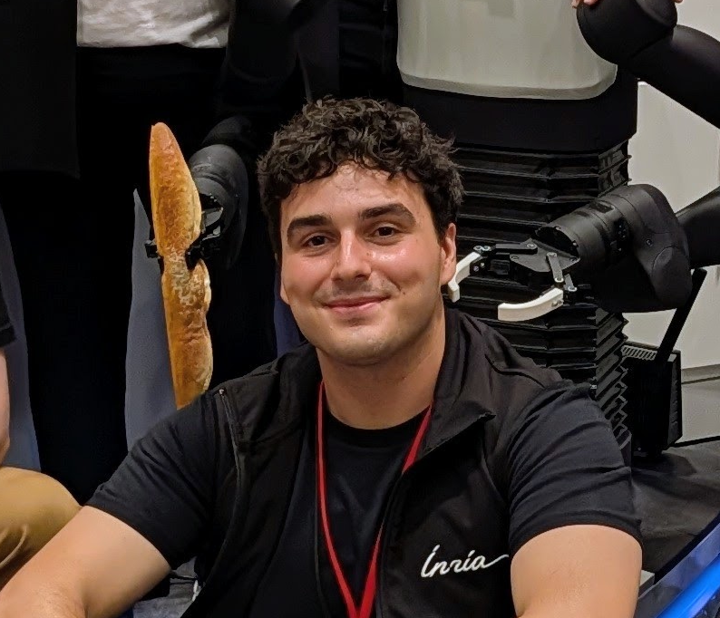

Doctoral Researcher, Inria Nancy Phd Candidate, University of Lorraine
I am currently a Doctoral Researcher at INRIA Nancy (LARSEN Team), under the supervision of Dr. Serena Ivaldi, and Dr. Jean-Baptiste Mouret, my work focuses on learning bimanual robot skills from human demonstrations and natural language. My primary research interests are: continuous control using dynamical system-based policies, Teleoperation, Natural Language Processing, Multi-Modal Learning, and Whole-Body Control.